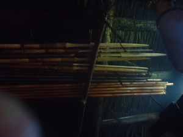

tunud 
/tunud/
n.
“arrow”
n.
a two or three tipped tipped arrow
Seini iya ka bala te piet ne egkahiyen ne iyan eglekaan ne egpakasuhat te eghisuhaten nu ne mahalang seini ne egkaayun ne egpakapatey ke egkasuhat ka.
Maliddus amana ka tunud ni Amè.
My father's arrow has a very sharp point..
Cult. two or three arrowheads on one shaft made from luwey cane - used for getting birds
cf. piet
cf. busug
Eng. arrow, multi-tipped; barbed arrow
Tag. palasôs; túnod
Ceb. panà
Ilo.: pána
OCM: Hunting and Trapping (224), Weapons (411)
Online dict status: -
Usage level: M
Updated by: RJH,QDL,RJH
Last updated: 24/Jul/2012
This page last updated: 03-Jan-2020
Copyright © 2009-2014, Matigsalug Language Christian Association, Inc